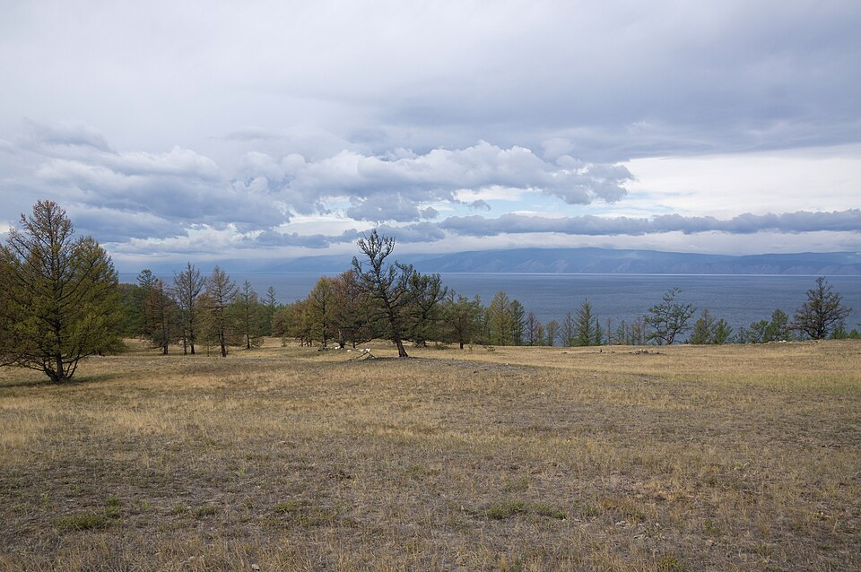
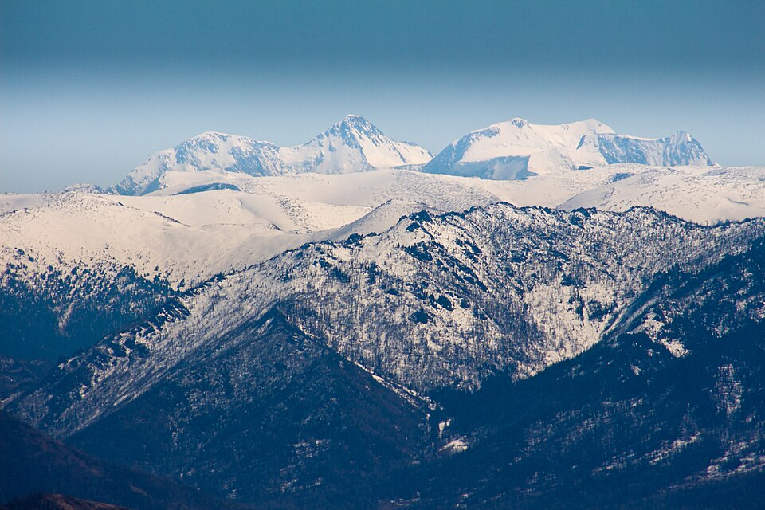
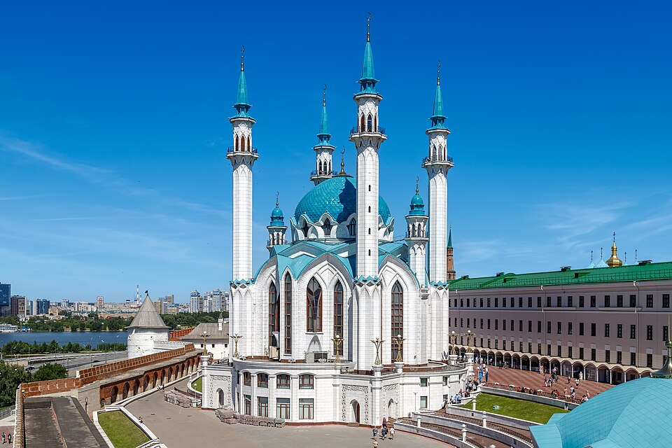
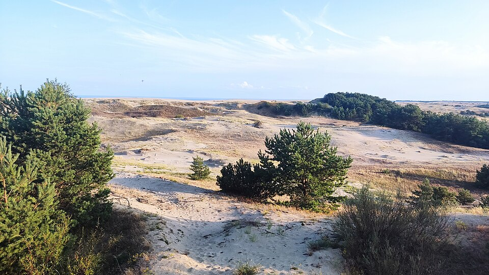
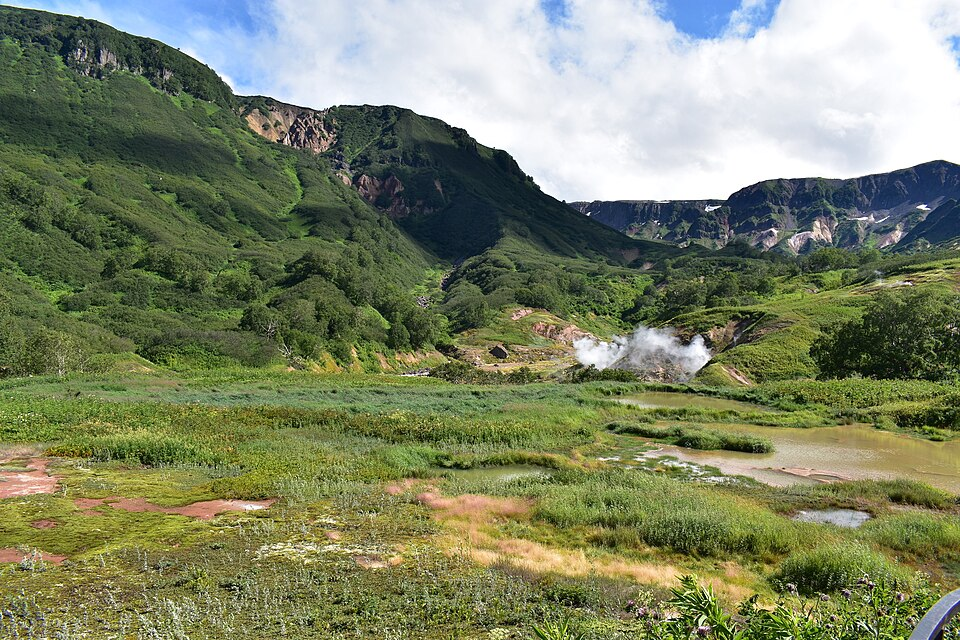

Байкал
Самое глубокое озеро на планете: его глубина достигает 1642 метров. Зимой прозрачный лёд Байкала превращается в настоящий каток.
ПодробнееПять мест, ради которых стоит собрать рюкзак

Самое глубокое озеро на планете: его глубина достигает 1642 метров. Зимой прозрачный лёд Байкала превращается в настоящий каток.
Подробнее
Горы, бирюзовые реки и Телецкое озеро. Высочайшая вершина Сибири - гора Белуха высотой 4506 метров.
Подробнее
Казанский кремль с мечетью Кул-Шариф и Благовещенским собором входит в список Всемирного наследия ЮНЕСКО.
Подробнее
Большое путешествиеУзкая полоса песка между Балтийским морем и Куршским заливом. Здесь высокие дюны, «Танцующий лес» с изогнутыми соснами и одна из главных станций кольцевания птиц. Коса внесена в список Всемирного наследия ЮНЕСКО.
Подробнее
Большое путешествиеКрай вулканов и гейзеров. Долина гейзеров в Кроноцком заповеднике - одно из крупнейших гейзерных полей в мире, а Ключевская сопка - самый высокий действующий вулкан Евразии.
ПодробнееФото с Wikimedia Commons: Байкал - Vyacheslav Argenberg, CC BY 4.0; Алтай - Katancev, CC BY-SA 3.0; Казань - Mike1979 Russia, CC BY-SA 3.0; Куршская коса - Alexander Grebenkov, CC BY 3.0; Камчатка - Rubin16, CC BY-SA 4.0.